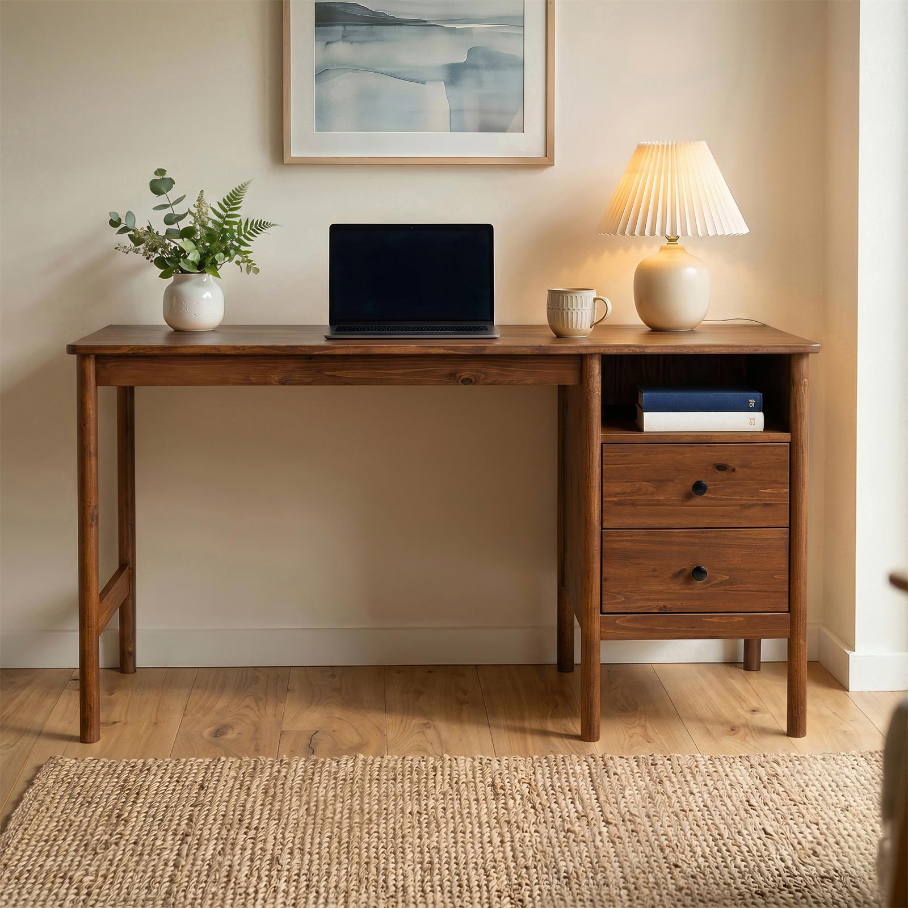
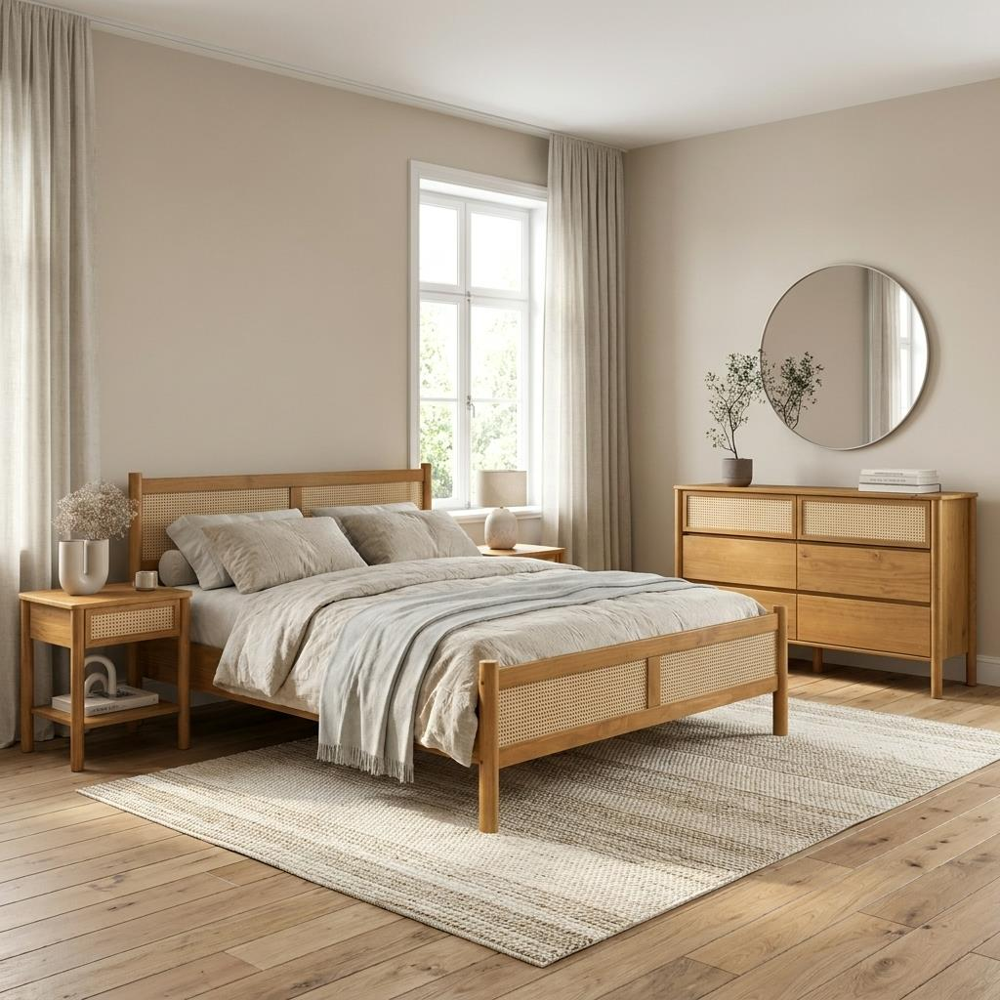
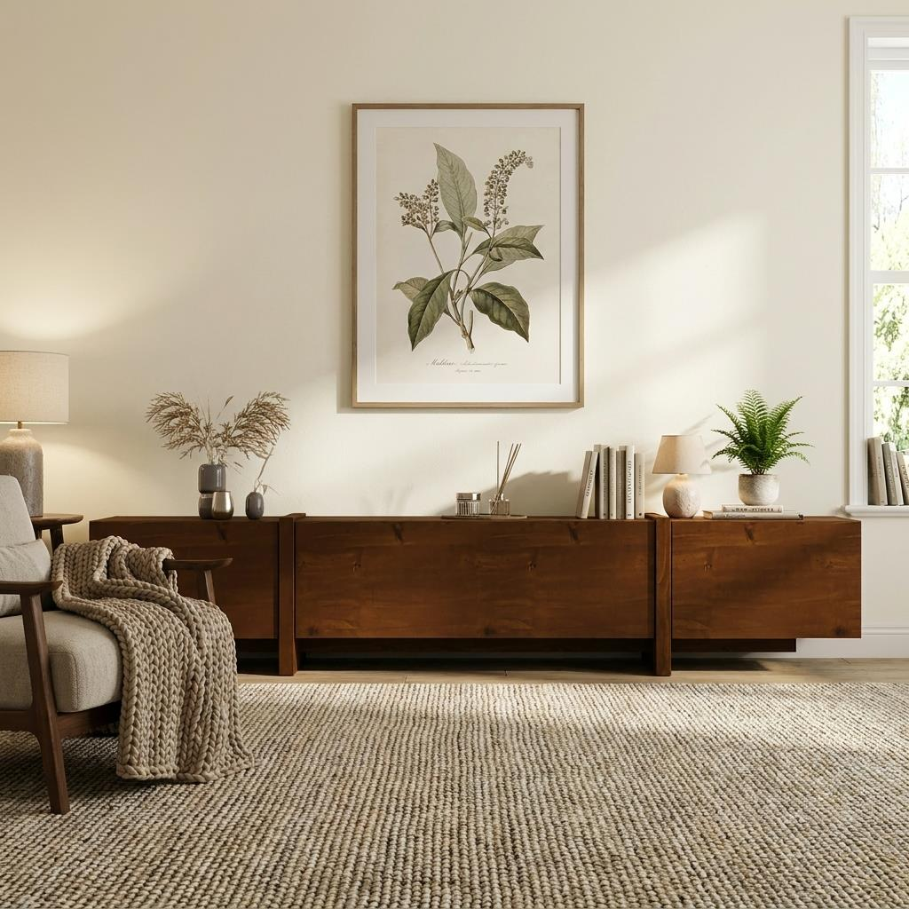
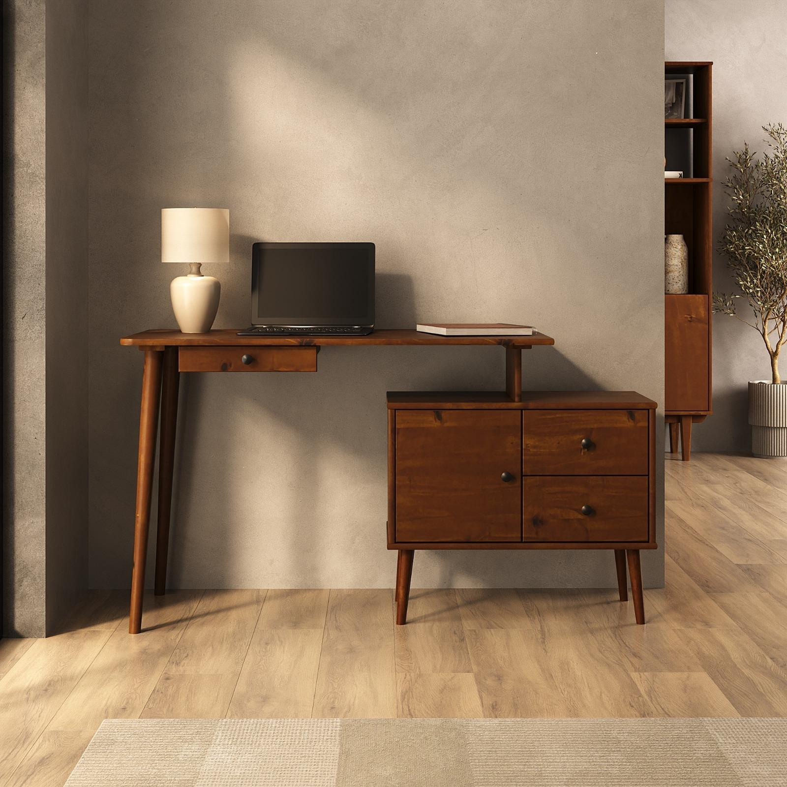
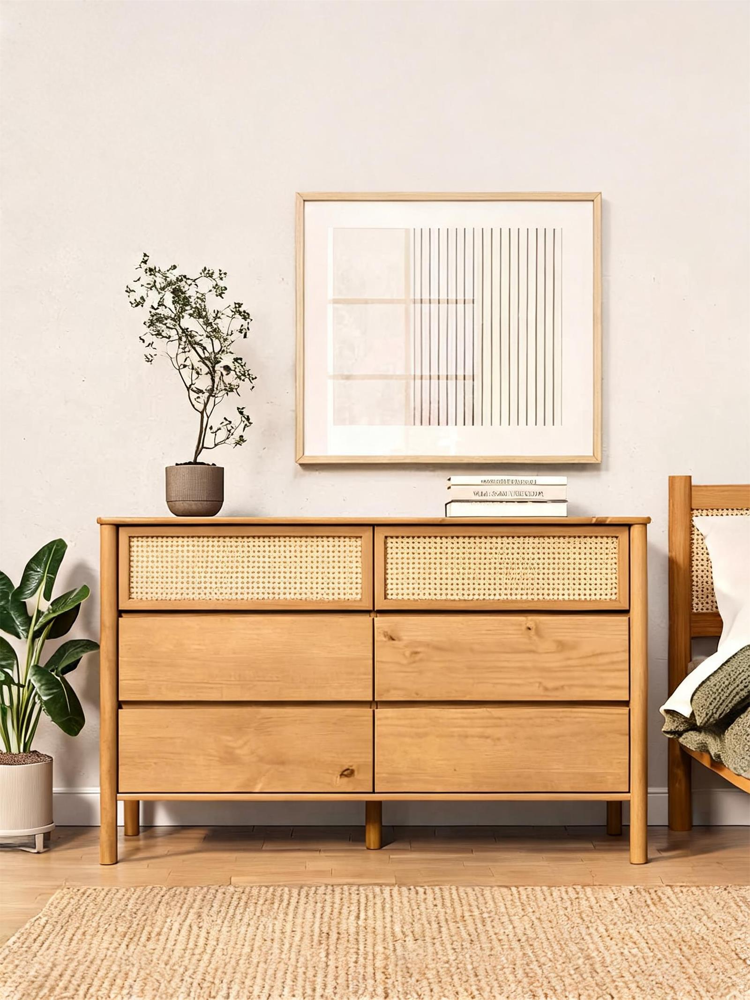

Artigos
Conteúdos anteriores para continuar pesquisando.
Publicações já consolidadas no blog para consultar materiais, medidas, ambientes e decisões de compra com mais segurança.

Como cuidar de móveis de madeira maciça no dia a dia
Limpeza, umidade, sol e uso correto: cuidados simples para conservar móveis de madeira maciça no dia a dia.
Continuar lendoComo escolher uma cama de madeira maciça
Tamanho, estrutura, estrado e acabamento: critérios para escolher uma cama de madeira maciça com mais segurança.
Continuar lendo
Como escolher móveis de madeira maciça de pinus para sua casa
Veja o que observar antes da compra para criar ambientes mais acolhedores, funcionais e feitos para durar.
Continuar lendo
Madeira maciça de pinus: entenda resistência, durabilidade e cuidados
Um guia direto para conhecer melhor o pinus, suas características e os cuidados que ajudam o móvel a permanecer bonito.
Continuar lendo
Como medir o ambiente antes de comprar um móvel online
Veja como observar circulação, parede, portas, tomadas e proporções para comprar com mais segurança e menos improviso.
Continuar lendo
Como escolher uma cômoda para quarto adulto
Uma leitura para comparar tamanho, gavetas, função e presença visual antes de escolher uma cômoda para o quarto.
Continuar lendo